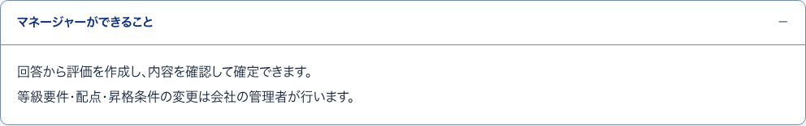
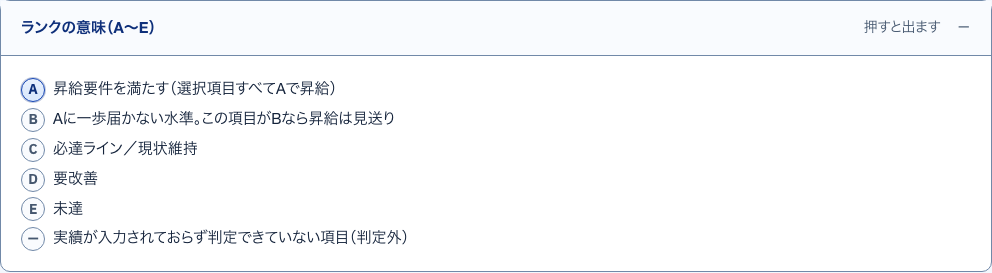

1メンバー別の状況開いて見る
S37 マネージャーのホーム ・ 押すもの: 「メンバー別の状況を見る」
中に出るもの
- メンバーの名前
- 等級と所属
- 提出済み・入力途中・未着手の札
中で押せるもの
- メンバーの名前: メンバー1人へ移る（→ S41）
3評価を作る確認確かめる小窓
S38 評価・結果を確認する ・ 押すもの: 「提出済みの回答から評価を作る」 ・ 閉じる: やめる
中に出るもの
- 提出済みn人分の評価を作り直す
- 確認中の評価は最新の回答で上書きされる
中で押せるもの
- やめる: 何もせず小窓を閉じる（→ S38）
- 提出済みの回答から評価を作る: 評価を作る（→ S38）
2できること開いて見る
S37 マネージャーのホーム ・ 押すもの: 「マネージャーができること」

中に出るもの
- 回答から評価を作り、確認して確定できる
- 等級要件や配点や昇格条件の変更は会社の管理者が行う
5集計し直す確認確かめる小窓
S39 評価1件 ・ 押すもの: 「この人の評価を集計し直す」 ・ 閉じる: やめる
中に出るもの
- この人の評価をいまの基準で計算し直す
- いま出ている点数と判定は上書きされる
中で押せるもの
- やめる: 何もせず小窓を閉じる（→ S39）
- この人の評価を集計し直す: 計算し直す（→ S39）
7ランクの意味開いて見る
S39 評価1件 ・ 押すもの: 「ランクの意味（A〜E）」

中に出るもの
- A 昇給要件を満たす
- B Aに一歩届かない。Bなら昇給は見送り
- C 必達ライン（現状維持）
- D 要改善
- E 未達
- 判定外 実績が無く判定できない項目
4この人だけ集計し直す開いて見る
S39 評価1件 ・ 押すもの: 「この人だけ集計し直す」
中に出るもの
- いまの基準と配点でこの人だけ計算し直す
- 他の方の評価は変わらない
中で押せるもの
- この人の評価を集計し直す: 確認の小窓を出す（→ S39）
6この図の見方開いて見る
S39 評価1件 ・ 押すもの: 「この図の見方」
中に出るもの
- 軸の長さは獲得点 ÷ 配点
- 配点の重い項目ほど、へこみが合計点に効く
8判定範囲の帯開いて見る
S39 評価1件 ・ 押すもの: 「判定範囲の帯について」
中に出るもの
- 帯は現在の基準表のA〜E
- 確定時の基準は各項目の判定範囲が正